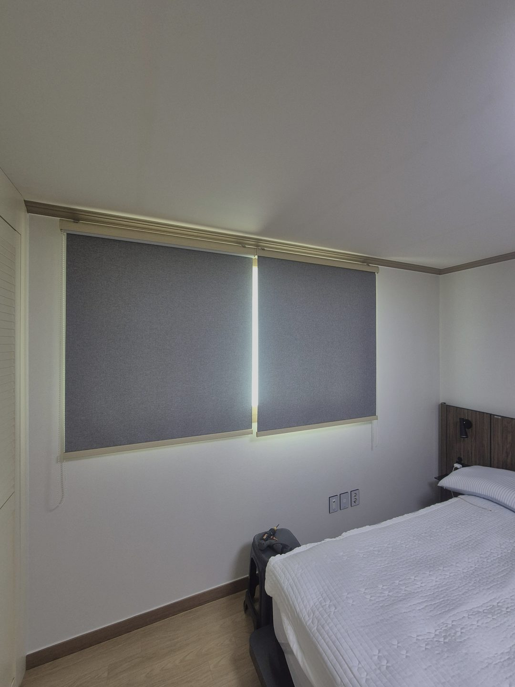
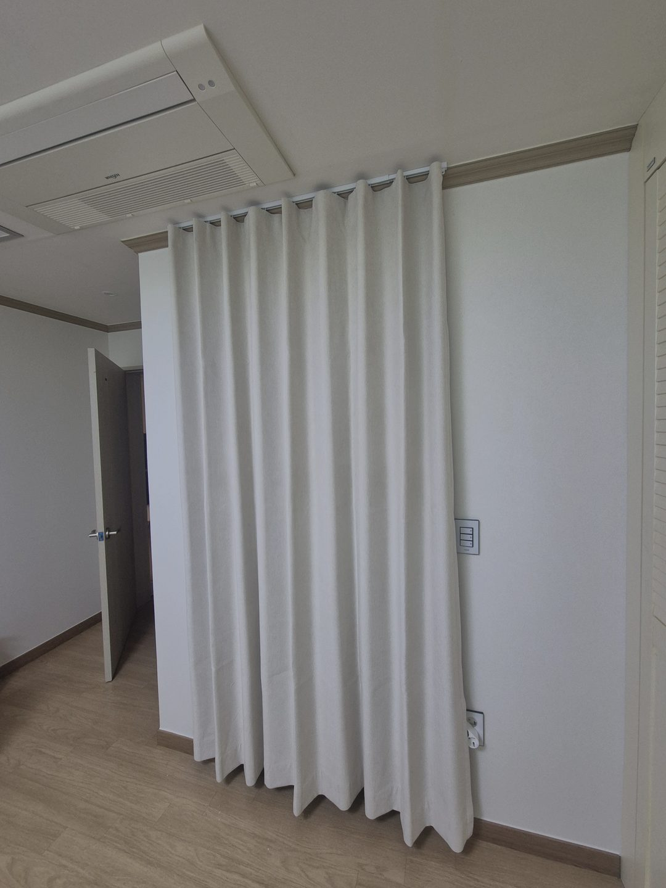
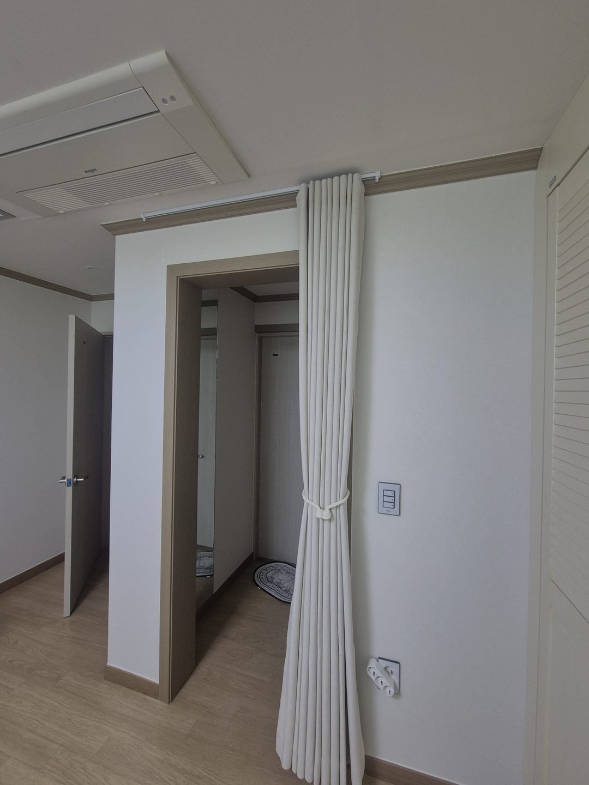

2026년 7월 26일 시공
포항 효자동 주택 안방
암막롤스크린 철거 후 속커튼+암막커튼 시공후기

포항 효자동 주택 안방 시공 기록입니다.
이 집 안방에는 이미 회색 암막롤스크린이 달려 있었습니다. 원단 성능이 나빠서 저희를 부르신 게 아니었어요.
고객님이 하신 말씀은 두 가지였습니다. 하나는 옆으로, 아래로 새어 들어오는 빛에 새벽마다 잠이 깬다는 것.
다른 하나는 침실인데 방이 사무실처럼 딱딱해 보인다는 것이었습니다.
안녕하세요, 포항을 포함한 경북 전 지역 커튼·블라인드 출장 시공 따솜커튼블라인드입니다.
새벽에 눈이 떠지는 진짜 원인은 테두리였습니다
롤스크린은 창틀 안쪽 치수에 맞춰 다는 구조입니다.
그래서 원단 양옆과 창틀 사이에 몇 밀리미터씩 틈이 남고, 아래쪽도 바닥에 딱 닿지 않습니다.
밖이 밝아지면 그 틈이 세로로 가느다랗게 빛납니다. 방 전체는 어두운데 그 선만 밝으니 밝기 대비가 커져서 오히려 더 눈에 들어옵니다.
"암막을 달았는데도 소용없다"고 하시는 경우, 열에 아홉은 원단이 아니라 이 테두리 빛샘입니다.
여름철 포항은 다섯 시 조금 넘으면 이미 밝아지니, 알람보다 창이 먼저 울린 셈이었습니다.
롤스크린을 걷어내고 커튼 두 겹으로

그래서 기존 롤스크린을 철거하고 커튼으로 바꿔드렸습니다.
커튼의 장점은 창 크기에 갇히지 않는다는 점입니다. 창 폭보다 양옆으로 더 넓게, 위쪽 레일 자리도 빛이 넘어오지 않도록, 아래도 넉넉하게 내려 덮습니다.
두 폭이 가운데에서 충분히 겹치도록 잡으면 가운데 이음선까지 사라집니다. 양옆, 위, 가운데 — 이 세 군데만 제대로 잡으면 대부분의 침실은 해결됩니다.
다만 암막 한 겹만 달면 밤은 완벽해지는데 낮이 답답해집니다. 수면에는 밤의 어둠만 필요한 게 아니라 낮의 빛도 필요하거든요.
그래서 앞쪽에 쉬폰 두배나비주름 속커튼을 한 겹 더 두었습니다.
낮에는 속커튼만 쳐서 빛을 부드럽게 걸러 쓰고, 주무실 때만 뒤의 100프로 암막커튼을 닫는 구조입니다. 밤은 완전히 어둡게, 낮은 은은하게. 원하시던 두 가지를 한 창에서 나눠 가진 셈입니다.
색은 백아이보리, 주름은 두배나비주름
색은 방 톤에 맞춰 백아이보리로 골랐습니다.
화이트 벽에 우드 톤 가구가 들어간 방이라, 순백색은 벽에 붙어 커튼이 없는 것처럼 밋밋해지고 진한 아이보리는 우드와 겹쳐 누렇게 처집니다. 그 사이를 잡아주는 색이 백아이보리입니다.
밝은 색이라 차광이 약하지 않냐는 질문을 자주 받는데, 100프로 암막 원단은 뒷면에 차광층이 따로 있어서 겉면 색과 빛 차단 성능은 별개입니다.
오히려 침실은 눈뜨자마자 보는 색이라 밝은 톤이 아침 기분에 낫습니다.
주름은 두배나비주름으로 잡았습니다. 창 폭의 두 배가 넘는 원단을 잡아 주름을 촘촘하게 만드는 방식이라, 쳤을 때 세로 결이 규칙적으로 떨어집니다.
평면이던 롤스크린 자리에 이 결이 들어오니 같은 가구, 같은 조명인데도 방이 훨씬 포근하게 읽힙니다.
레일은 창 쪽이 암막, 실내 쪽이 속커튼 순서로 두 줄을 잡았고, 두 원단이 서로 스치지 않도록 줄 간격을 원단 두께에 맞춰 벌렸습니다.
화장실 출입공간까지 같은 톤으로

안방을 마치고 화장실 출입공간도 손봤습니다.
기존 커튼을 철거하고 같은 백아이보리 100프로 암막커튼으로 새로 달았습니다.
문을 대신해 공간을 자연스럽게 가려주면서 밤에 화장실 불빛이 새어나오는 것도 막아줍니다.

안방과 같은 색, 같은 원단으로 맞추니 방을 나설 때 시선이 끊기지 않고 집 전체가 하나로 정리된 느낌이 납니다.
평소엔 한쪽으로 묶어두면 통로가 넓게 열리고, 필요할 때만 펼쳐 쓰시면 됩니다.
시공 정보
지역 : 경북 포항시 효자동 (주택)
공간 : 안방, 화장실 출입공간
철거 : 기존 암막롤스크린, 기존 커튼
제품 : 쉬폰 두배나비주름 속커튼(백아이보리) + 100프로 암막커튼(백아이보리)
작업 시간 : 약 4시간
시공일 : 2026년 7월 26일
자주 묻는 질문
Q. 암막을 달았는데도 새벽에 깨요.
원단이 아니라 테두리를 보셔야 합니다. 양옆, 위쪽, 가운데 겹침 이 세 군데에서 새는 경우가 대부분입니다.
Q. 암막커튼을 달면 낮에 너무 어둡지 않나요?
암막 한 겹만 달면 그렇습니다. 속커튼을 함께 두면 낮은 밝게, 밤은 완전히 어둡게 나눠 쓸 수 있습니다.
Q. 밝은 색 암막도 정말 빛이 차단되나요?
됩니다. 차광은 원단 뒷면의 차광층이 담당하고 겉색과는 별개입니다.
Q. 롤스크린을 커튼으로 바꾸는 시공도 되나요?
됩니다. 기존 롤스크린이나 블라인드 철거부터 새 커튼 설치까지 한 번에 진행합니다. 이번 안방이 정확히 그 시공이었습니다.
Q. 포항 효자동도 방문 시공 되나요?
네. 포항 전 지역은 담당 실장이 직접 방문해 창을 보고 시공합니다. 경주, 안동, 영천 등 경북 동부도 같은 담당입니다.
마무리
새벽마다 깨던 안방이 이제는 커튼 한 겹으로 낮과 밤을 나눠 쓰는 방이 됐습니다.
포항에서 커튼, 블라인드 알아보고 계신다면 편하게 문의 주세요.
창 전체가 나오게 찍은 사진 한 장만 주시면 방문 전에 대략적인 견적을 먼저 알려드립니다.
비슷한 시공이 필요하신가요?
창 전체가 나오게 찍은 사진 한 장 주시면 방문 전에 견적을 알려드립니다.
부재 시 문자를 남겨주시면 빠르게 답변드립니다.